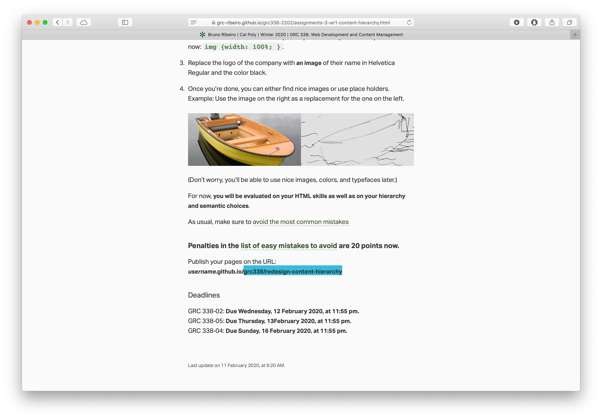
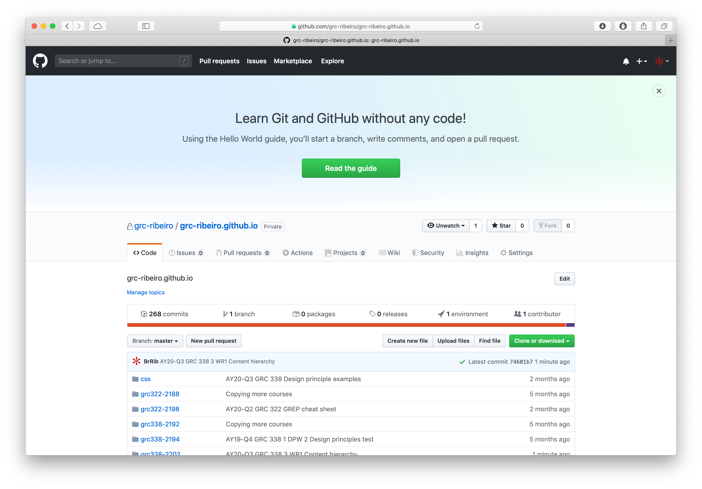
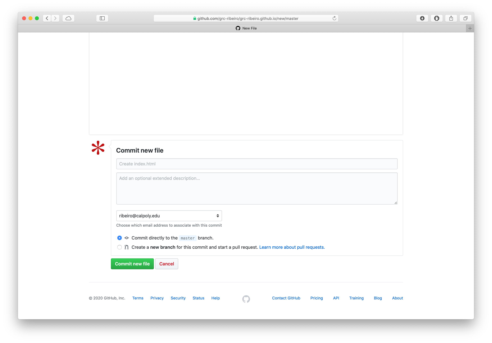
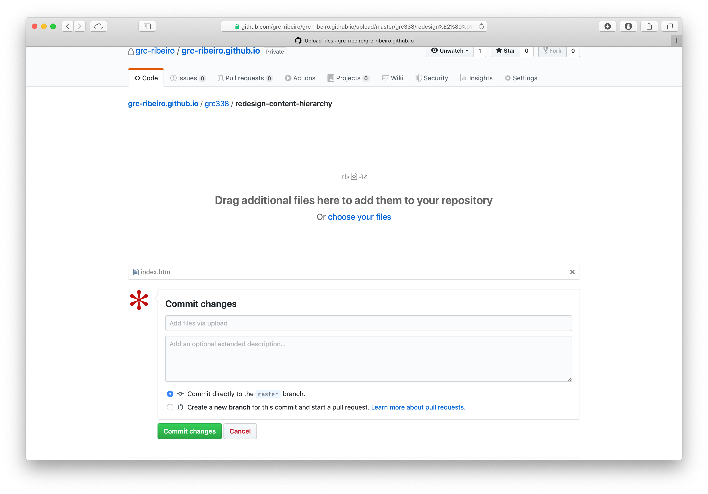

First, go to the assignment instructions and copy the URL after the first slash (/).

Now, log in GitHub and go to the repository named username.github.io.

Click on Create new file.

Paste the part of the URL that you copied from the assignment instructions in the first step of this short tutorial as the name of your file you’re creating.

Include a new slash (/) at the end of it, so GitHub understands it’s a folder.

Create the file index.html

Scroll down and click on Commit new file.

Click on Upload files.

Drag and drop your files or click on choose your files to navigate to them on your computer.

click on Commit new file again.

Navigate back to the folder you were working now and copy the URL to test on a new tab or window of your browser.

Don’t forget to submit your URL to Canvas.